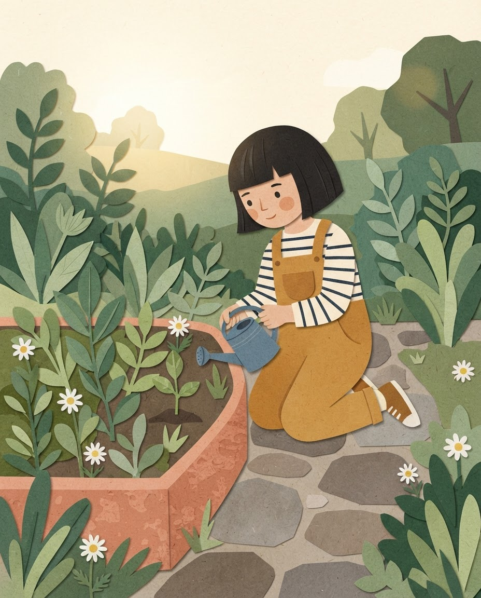
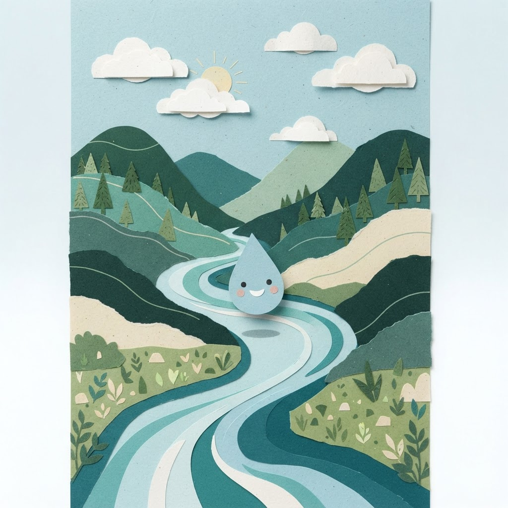
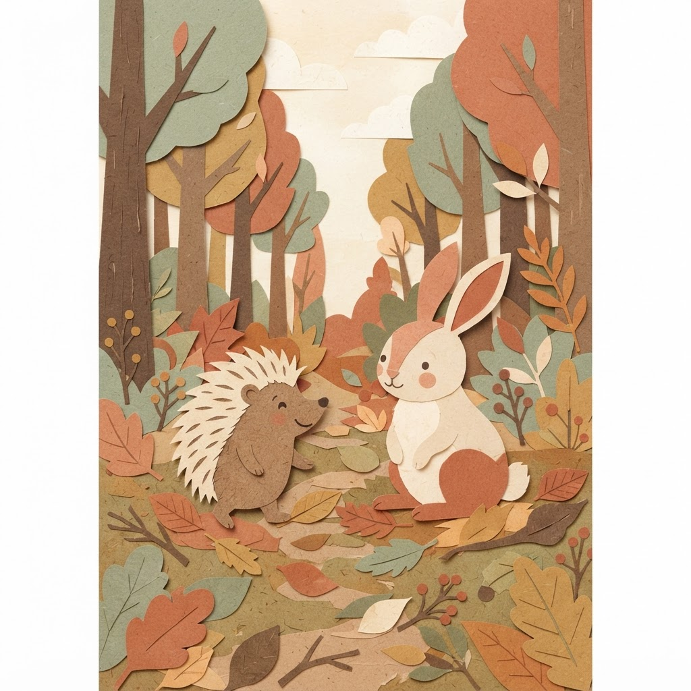
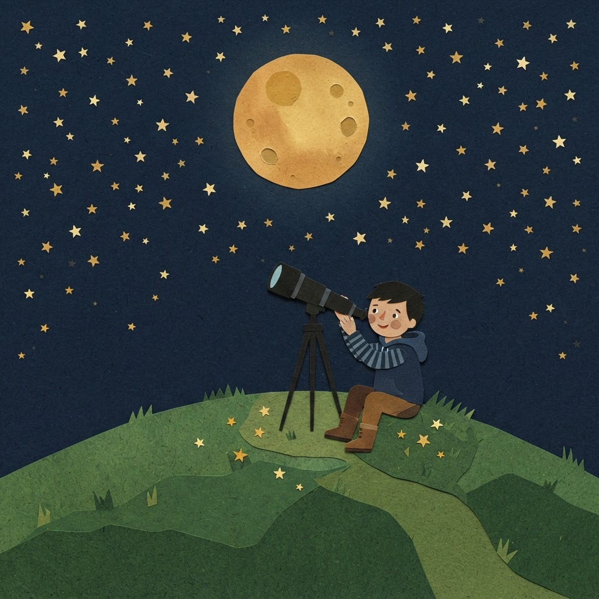

Entre páginas
BANCO DE LIBROS ESCOLAR
ESPACIO ESCOLAR
Biblioteca
Primaria Los Encinos
Un libro, muchas formas de aprender.
MG
María García
Maestro · 2.º A
Cerrar sesión
Biblioteca escolar / Espacio del maestro
Maestro
Una historia para cada día
Hola, María. Encuentra la próxima lectura para compartir con tu grupo.
Buscar por título, autor o palabra clave
Todos los grados
Todas las categorías
10 libros disponibles
Todos incluyen una actividad
Ordenar: recomendados
La semilla de Luna
Elena Ríos

La semilla de Luna
Elena Ríos · 10 min de lectura
2.º grado
Naturaleza
Ver libro y leer
El viaje de una gota
Pablo Montes

El viaje de una gota
Pablo Montes · 8 min de lectura
2.º grado
Ciencia
Ver libro y leer
Un abrazo para erizo
Lucía Vidal

Un abrazo para erizo
Lucía Vidal · 7 min de lectura
1.º grado
Convivencia
Ver libro y leer
El cielo de Tomás
Inés Navarro

El cielo de Tomás
Inés Navarro · 12 min de lectura
3.º grado
Imaginación
Ver libro y leer
Mostrando 1–4 de 10 libros
Anterior
1
2
3
Siguiente
Del cuento a la conversación
Cada libro tiene preguntas para imaginar, comprender y compartir ideas.
Elige → Proyecta → Conversa